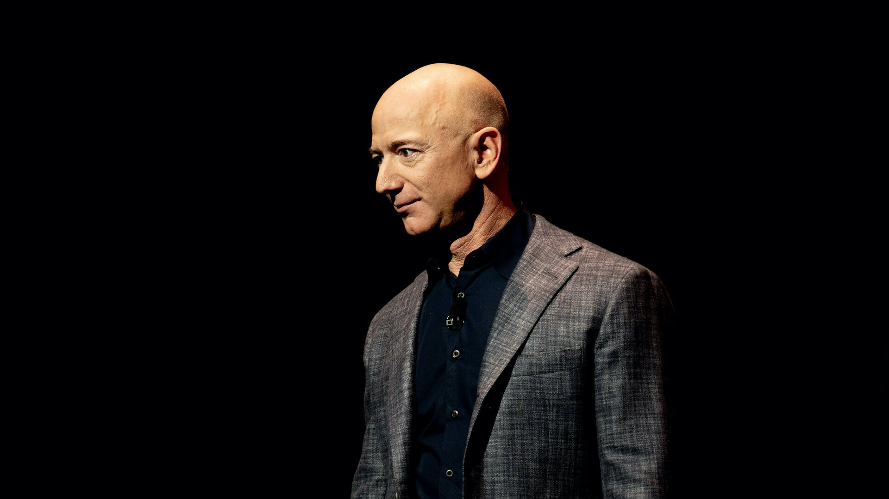

(1964-Present)
Founder And CEO Of
"Be stubborn on vision, but flexible on details."
Jeff Bezos, (born Jan. 12, 1964, Albuquerque, N.M., U.S.), U.S. Internet entrepreneur. Educated at Princeton University, he worked in banking and investment at Bankers Trust and D.E. Shaw & Co. before founding Amazon.com, Inc., in 1995. The Internet company began as a bookseller and later expanded into recorded music, videos, electronic equipment, tools, and other areas, including online auctions. Amazon.com became famous for the extraordinary rise in its stock-market valuation despite continued annual losses—a reflection of investor confidence in the future of online retailing that marked the late 1990s. The company posted its first quarterly profit in January 2002. In 2007 it released a portable wireless electronic reading device called the Kindle, which proved incredibly popular. In 2013 Bezos acquired The Washington Post and affiliated publications.
1964, January 12: Jeff Bezos is born
1978: Enrolls at Miami Palmetto High School
1982: Graduates from high school as valedictorian
1986: Electrical engineering & computer science degrees from Princeton (Summa Cum Laude)
1988: Is hired as product manager as Bankers Trust
1993: Jeff Bezos marries novelist Mackenzie Tuttle
1994, July 14: Founds Amazon as an online bookstore, which, as we know now, will turn out to be the most important milestone on Jeff Bezos’ timeline
1994, August 23: Moves to Seattle
1997: Takes Amazon public
1998: Diversifies Amazon’s product range
1999: Named “Person of the Year” by TIME Magazine
2000: Jeff Bezos founds Blue Origin
2003: Helicopter crash in West Texas
2008: Honorary doctorate from Carnegie Mellon University
2013: Secures contract with CIA
2013, January: Pledges $500,000 to Worldreader
2013, August: Purchases Washington Post
2014: Ranked as best-performing CEO by Harvard Business Review
2016: Stars in Star Trek Beyond
2017: Gives $1 million to the Reporters Committee for Freedom of the Press
2017: Becomes the world’s richest person
2018, January: Donates $33 million to TheDream.US
2018, September: Pledges $2 billion to Day 1 Families & Day 1 Academies
2019, January 12: Jeff Bezos’ 55th birthday
2019, March: Saudi hacking accusation
2019, April 3: Divorces McKenzie
2019, July 13: 1st public appearance with his new life partner, Lauren Sanchez
2020, February: Bezos pledges $10 billion for combating climate change through his Earth Fund
2020, April: Donates $100 million to Feeding America
2021, July 5: Steps down as Amazon CEO
2021, September: Co-founds Altos Labs
2021, November: Donates $100 million to the Obama Foundation
2021: Loses the title of wealthiest person in the world to Elon Musk